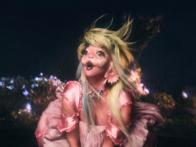

Minha artista favorita
Quem é Melanie Martinez?
Melanie Martinez é uma cantora, compositora e atriz americana. Ela nasceu em 28 de abril de 1995, em Astoria, Nova York, Estados Unidos.
O álbum conceitual mais conhecido de Melanie Martinez é "Cry Baby", lançado em 2015. O álbum conta a história de uma personagem chamada Cry Baby e explora temas como infância, inocência e os desafios do crescimento. Cada música do álbum foi acompanhada por um videoclipe, formando uma narrativa visual coerente
Redes sociais:
- Youtube: @Melanie Martinez
- Instagram: @littlebodybigheart
- Twitter: @littIebodyheart